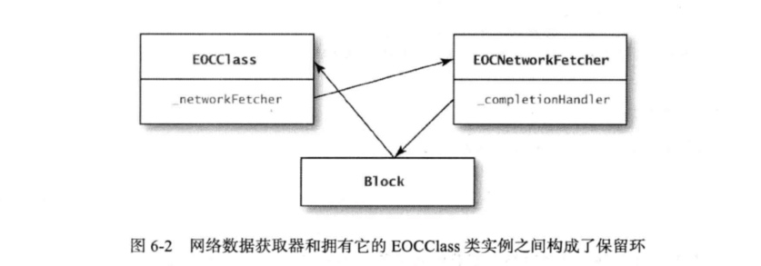

我们使用块的时候，如果不仔细思索，很容易出现“保留环”，我们来举个例子，下面这个类就提供了一套接口，调用者可由此从某个URL中下载数据。在启动获取器时，可设置 completion handler,这个块会在下载结束之后以回调方式执行。为了能在下载完成后通过p_requestCompleted方法执行调用者所指定的块，这段代码需要把completion handler保存到实例变量里面。
// EOCNetwor kFetcher. h
#import <Foundation/Foundation.h>
typedef void(^EOCNetworkFetcherCompletionHandler) (NSData *data);
@interface EOCNetworkFetcher : NSObject
@property (nonatomic, strong, readonly) NSURL *url;
-(id)initWithURL:(NSURL^)url;
-(void)startWithCompletionHandler:(EOCNetworkFetcherCompletionHandler)completion;
// EOCNetworkFetcher.m
#import "EOCNetworkFetcher.h"
@interface EOCNetworkFetcher ()
@property(nonatomic, strong, readwrite) NSURL *url;
@property(nonatomic, copy) EOCNetworkFetcherCompletionHandler completionHandler; (nonatomic, strong) NSData *downloadedData;
@implementation EOCNetworkFetcher
-(id)initWithURL:(NSURL*)url {
if ((self = [super init])) {
_url = url;
}
return sel£;
}
-(void)startWithCompletionHandler:
(EOCNetworkFetcherCompletionHandlei) completion
{
self.completionHandler = completion;
//Start the request
// Request sets downloadedData property
//When request is finished, p_requestCompleted is called
}
-(void)p_requestCompleted {
if (_completionHandler){
_completionHandler(_downloadedData);
}
}
@end
某个类可能会创建这种网络数据获取器对象，并用其从URL中下载数据：
@implemantation EOCClass {
EOCNetworkFetcher *_networkFetcher;
NSData *_fetchedData;
}
-(void)downloadData {
NSURL *url = [[NSURL alloc] initWithString:
@"http://www.example.com/something.dat"];
_networkFetcher = [[EOCNetworkFetcher alloc] initWithURL:url];
[_networkFetcher startWithCompletionHandler:^(NSData *data){
NSLog (@"Request URL %@ finished", _networkFetcher.url);
_fetchedData = data;
}]；
}
@end
这段代码没有什么问题，但是里面有一个隐蔽的保留环，因为completion handler块要设置_fetchedData实例变量,所以它必须捕获self变量（变量捕获问题详见第37条。这就是说，handler块保留了创建网络数据获取器的那个EOCClass实例。而EOCClass实例则通过strong实例变量保留了获取器，最后，获取器对象又保留了handler块。
如下图所示：

要打破保留环也很容易：要么令_networkFetcher实例变量不再引用获取器，要么令获取器的completionHaiidler属性不再持有handler块。在网络数据获取器这个例子中，应该等 completion handler块执行完毕后，再去打破保留环，以便使获取器对象在handler块执行期间保持存活状态。比方说，completion handler块的代码可以这么修改：
[_networkFetcher startWithCompletionHandler:^(NSData *data){
NSLog (@"Request URL %@ finished", _networkFetcher.url);
_fetchedData = data;
_networkFetcher = nil;
}]；
如果设计API时用到了completion handler这样的同调块，那么很容易形成保留环，所以必须意识到这个重要问题。一般只要适时的清理环中的某个引用即可。
但是上例如果不执行completion handler，那么保留环就无法打破，于是内存就会泄漏。
所以我们使调用API的那段代码无须在执行期间保留指向网络数据获取器的引用，而是设定一套机制，令获取器对象自己设法保持存活。要想保持存活，获取器对象可以 在启动任务时把自己加到全局的collection中（比如用set来实现这个collection),待任务完成后，再移除。
所以我们改写一下：
-(void)downloadData {
NSURL *url = [[NSURL alloc] initWithString:
@"http://www.example.com/something.dat"];
EOCNetworkFetcher *networkFetcher = [[EOCNetworkFetcher alloc] initWithURL:url];
[networkFetcher startWithCompletionHandler:^(NSData *data){
NSLog (@"Request URL %@ finished", networkFetcher.url);
_fetchedData = data;
}]；
}
大部分网络通信库都采用这种办法，因为假如令调用者自己来将获取器对象保持存活的话，他们会觉得麻烦。Twitter框架的TWRequest对象也用这个办法。
但是上面这个例子仍然有保留环，completion handler块会通过获取器对象来引用其中的URL,之后获取器会反过来经由CompletionHandler属性保留这个块。我们把块保留在属性里的目的是想稍后来使用这个块。所以一旦我们运行过completion handler之后就可以将它释放了。我们消除保留环可以按照下面修改：
-(void)p_requestCompleted {
if (_completionHandler){
_completionHandler(_downloadedData);
}
self.completionHandler = nil;
}
这样只要下载请求执行完毕，保留环就解除了。
请注意，之所以要在start方法中把completion handler作为参数传进去，这也是一条重要原因。假如把completion handler暴露为获取器对象的公共属性，那么就不便在执行完下载请求之后直接将其淸理掉了，因为既然已经把handler作为属性公布了，那就意味着调用者可以自由使用它，若是此时又在内部将其清理掉的话，则会破坏“封装语义” (encapsulation semantic)。
这两种保留环都很容易发生。使用块来编程时，一不小心就会出现这种bug,反过来说，只要小心谨慎，这种问题也很容易解决。关键在于，要想清楚块可能会捕获并保留哪些对象。如果这些对象又直接或间接保留了块，那么就要考虑怎样在适当的时机解除保留环。
要点
- 如果块所捕获的对象直接或间接地保留了块本身，那么就得当心保留环问题。
- 一定要找个适当的时机解除保留环，而不能把责任推给API的调用者。